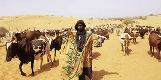

Je suis un berger peulh
Le peul ou pullo(fulbe au pluriel) ou fulani est une ethnie ouest Africaine aux traits fins et à la peau cuivrée ou noire, qui vit sur un territoire allant du Sénégal jusqu'à l'est du lac Tchad. Ils sont majoritairement des berges nomades à la recherche de paturage pour leurs boeufs. L'ethnie peulh est composée de quatre grandes branches ethniques à savoir : les Diallo dit encore dialloubè, les Ba encore appelé Ba'aabè, les Barry communement appelé Bariibè et les Sow.
Cette ethnie parle la langue appelée fulfulde ou pular ou fulah. Cette langue comporte plus de 20 millions de locuteurs dans le monde entier et comporte plusieurs accents dépendant sur la région géographique dont elle est parlée. On trouve entre autres l'accent Sénégalais ou le fulah parlé au Sénégal, en Gambie et en Mauritanie ; l'accent Malien ou le fulfulde masina parlé au Mali, dans certaines régions du niger et du Burkina faso ; L'accent du Nigeria Est ou le fulfulde Adamawa parlé au Nigeria et au Caméroun...